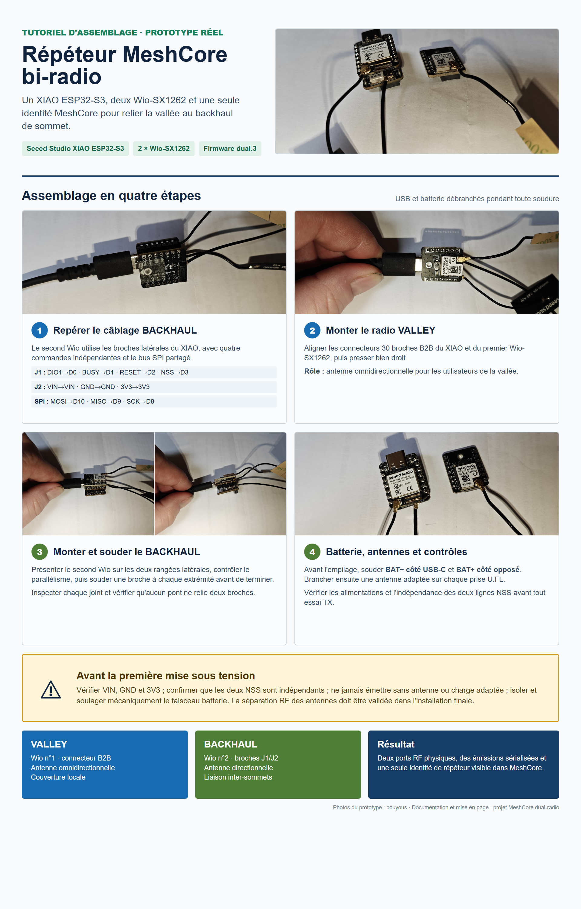
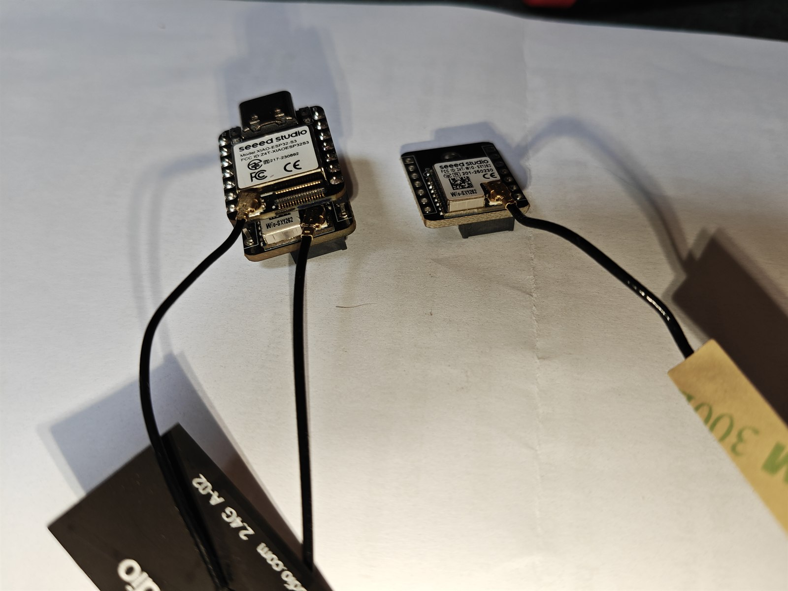
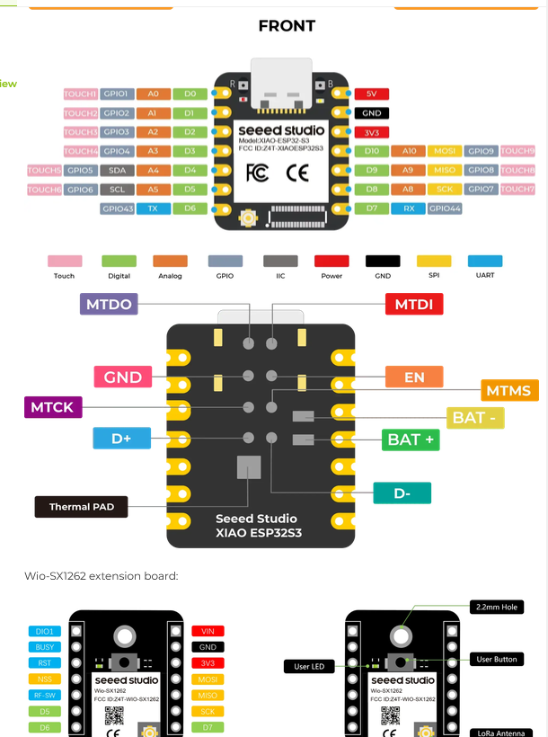
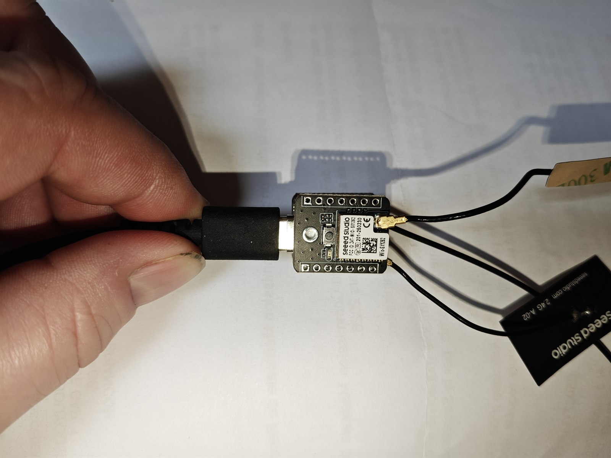
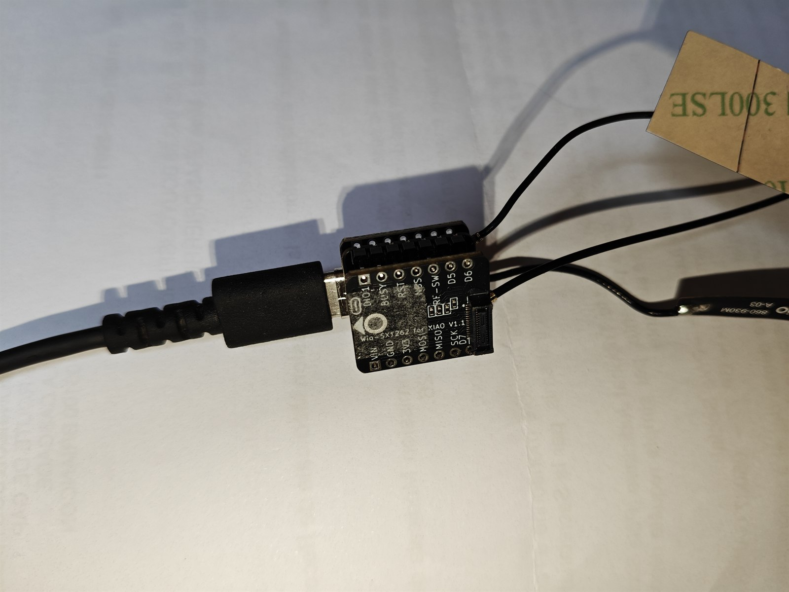
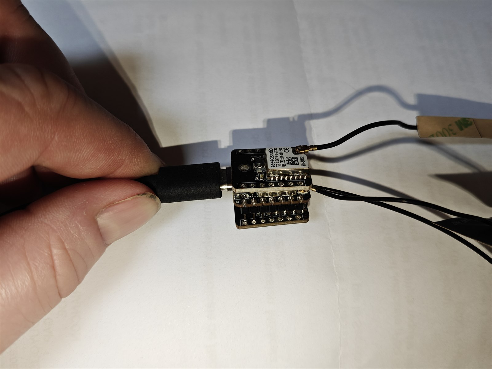
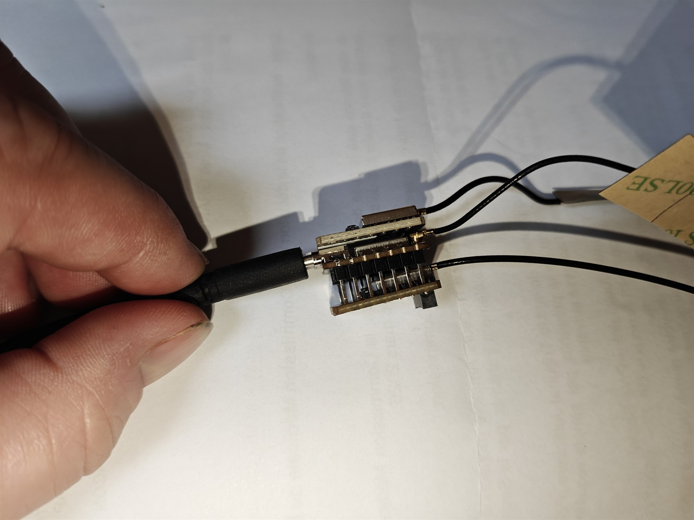
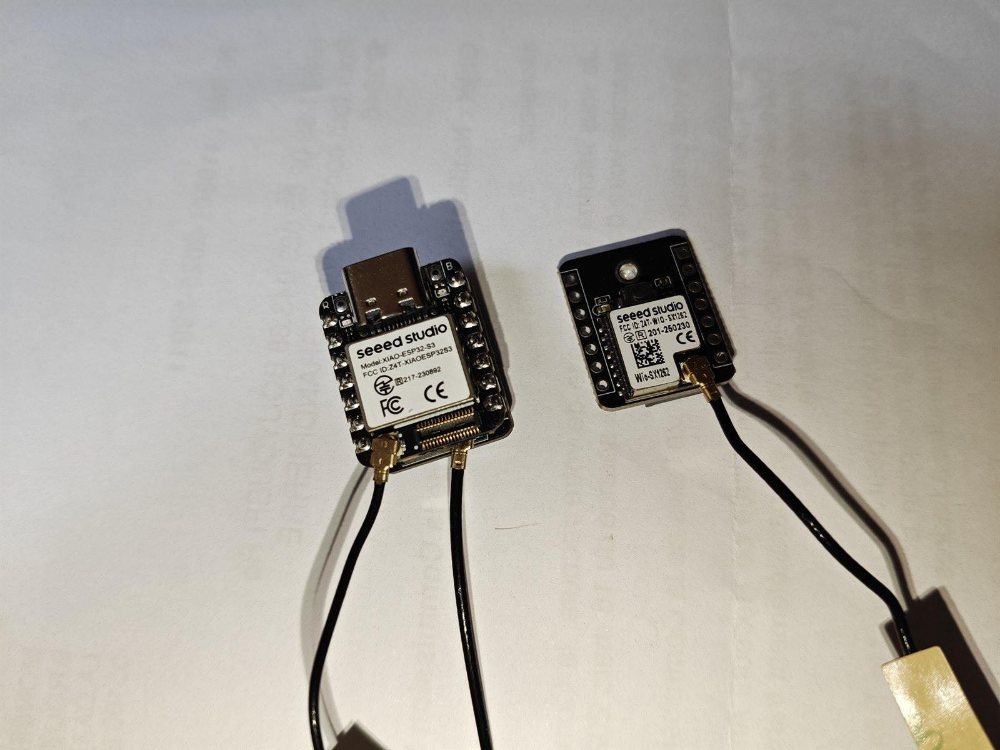

Tutoriel d'assemblage avec photos réelles
Ce tutoriel montre le prototype réellement utilisé : un Seeed Studio XIAO ESP32-S3 et deux Seeed Studio Wio-SX1262 for XIAO. La planche ci-dessous résume l'assemblage ; les étapes détaillées suivent.

Matériel
- 1 × Seeed Studio XIAO ESP32-S3 ;
- 2 × Seeed Studio Wio-SX1262 for XIAO ;
- 2 × antennes LoRa adaptées à la bande utilisée, ou charges fictives pour les essais ;
- deux rangées de broches pour le Wio
BACKHAUL; - un petit faisceau isolé pour une batterie LiPo rechargeable 3,7 V, si elle est prévue ;
- multimètre, fer à souder, flux, loupe et matériel d'isolation.

1. Tout débrancher
Débrancher le câble USB, la batterie et toute autre alimentation. Ne jamais souder une carte alimentée. Installer une antenne ou une charge adaptée sur chaque Wio avant tout essai d'émission.
2. Préparer la batterie avant l'empilage
Les pads sont sous le XIAO et deviendront difficiles à atteindre après la pose du second Wio. Avec l'USB-C comme repère :
BAT-est le pad le plus proche de l'USB-C, à relier au fil noir ;BAT+est le pad le plus éloigné de l'USB-C, à relier au fil rouge.
Utiliser une batterie lithium rechargeable qualifiée de 3,7 V. Isoler les deux soudures et ajouter un soulagement de traction. Ne pas brancher la batterie sur VIN, 5V ou 3V3.

3. Monter le Wio VALLEY
Le premier Wio-SX1262 utilise le connecteur 30 broches B2B prévu par Seeed. Orienter l'USB-C du XIAO vers le haut, aligner les deux connecteurs et presser verticalement sans torsion. Ce port est destiné à l'antenne omnidirectionnelle de la vallée.

4. Présenter le Wio BACKHAUL
Avant toute soudure, emboîter à blanc le second Wio sur les broches latérales. Les deux rangées doivent rester parallèles et les cartes ne doivent pas se toucher en dehors des connecteurs prévus.
Le côté J1 fournit les commandes indépendantes :
| Wio | XIAO | GPIO | Usage |
|---|---|---|---|
| DIO1 | D0 | 1 | interruption radio |
| BUSY | D1 | 2 | état occupé |
| RESET | D2 | 3 | remise à zéro |
| NSS / CS | D3 | 4 | sélection SPI du BACKHAUL |
Le côté J2 fournit l'alimentation et le bus SPI partagé :
| Wio | XIAO | GPIO |
|---|---|---|
| VIN | VIN / 5V | - |
| GND | GND | - |
| 3V3 | 3V3 | - |
| MOSI | D10 | 9 |
| MISO | D9 | 8 |
| SCK | D8 | 7 |

5. Souder les deux rangées
Immobiliser les cartes parfaitement alignées. Souder d'abord une broche à chaque extrémité, contrôler l'équerrage, puis terminer les autres points. Une soudure doit être brillante, sans boule libre et sans pont entre deux broches.


6. Contrôler avant alimentation
Au multimètre :
- vérifier la continuité de
GND,3V3,MOSI,MISOetSCK; - vérifier que
GPIO41(NSSdu WioVALLEY) n'est pas relié àGPIO4(NSSdu WioBACKHAUL) ; - confirmer l'absence de court-circuit entre
3V3,VINetGND; - contrôler une nouvelle fois la polarité du faisceau batterie.
7. Brancher les antennes
Brancher une antenne adaptée sur chaque connecteur U.FL : omnidirectionnelle pour VALLEY, directionnelle pour BACKHAUL. Les petits coaxiaux ne doivent pas tirer sur les prises. La séparation, la polarisation et l'isolation RF devront être validées dans le boîtier final.

8. Flasher et vérifier
Suivre la procédure de flash, puis contrôler au démarrage :
Dual SX1262 repeater mode
VALLEY radio init OK
BACKHAUL radio init OK
La commande get dualradio doit ensuite afficher les deux ports. Ne commencer les essais TX qu'avec les deux antennes ou charges fictives connectées.
Le tableau électrique complet et les avertissements de montage restent disponibles dans la notice de câblage.
Sources des images
Les photographies du prototype ont été réalisées par bouyous. Les diagrammes de brochage proviennent de la documentation officielle Seeed Studio : XIAO ESP32-S3 et kit XIAO ESP32-S3 + Wio-SX1262.